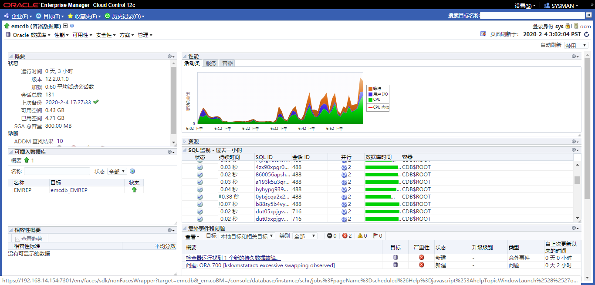
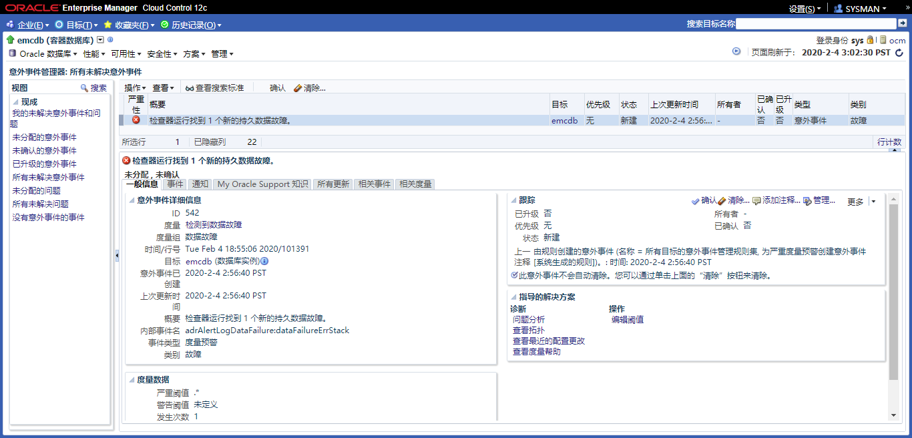
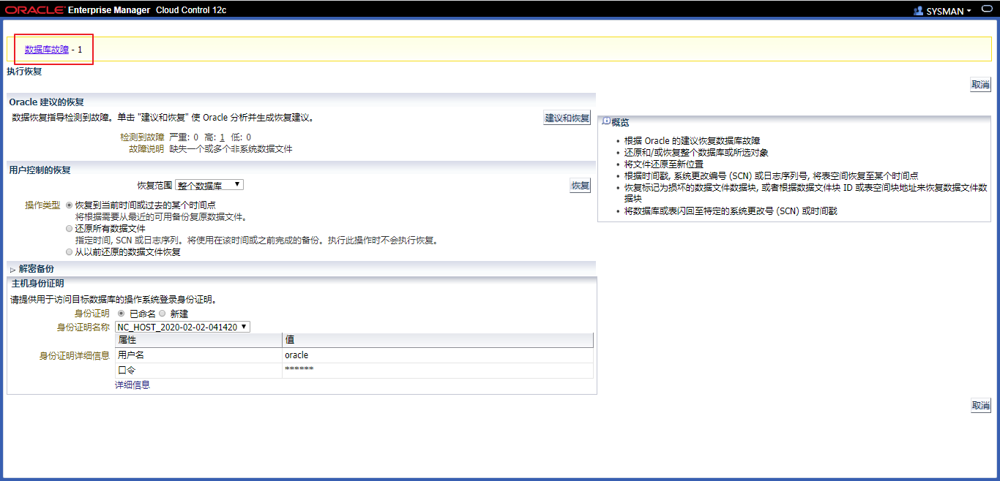
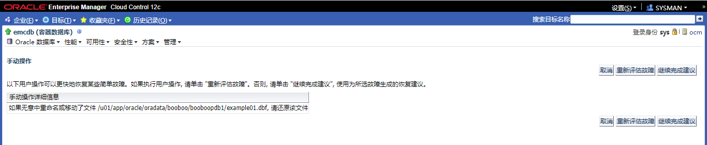
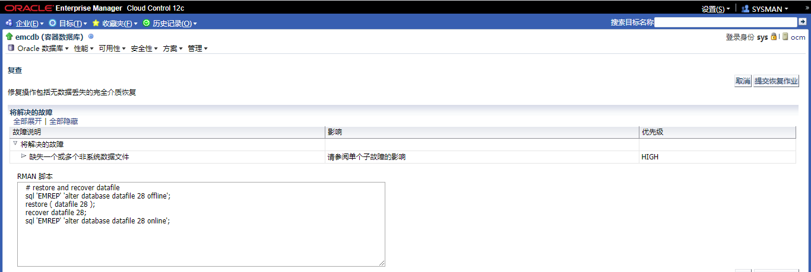
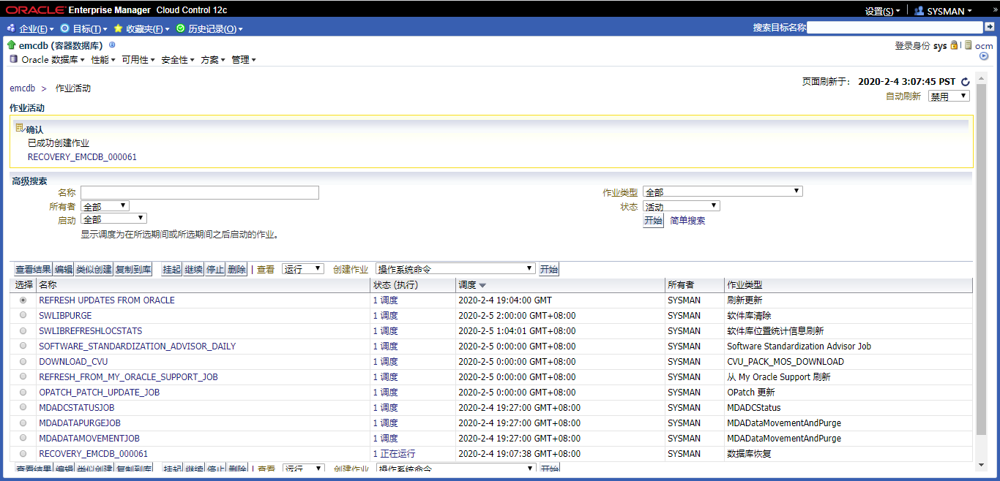
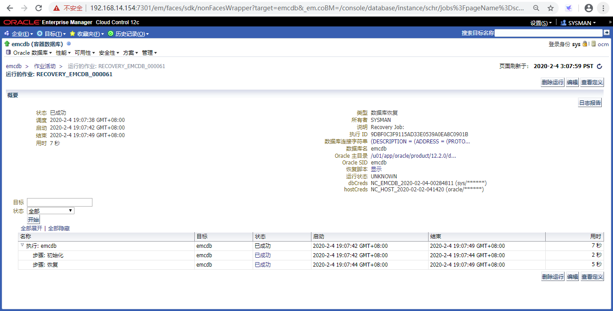
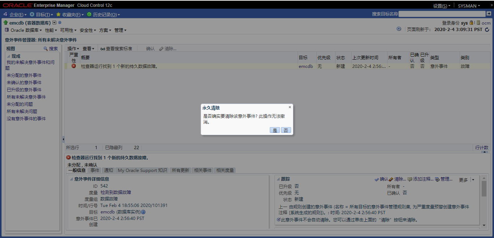

Practices for Lesson 15: Performing Database Recovery
2020.01.29 BoobooWei
实践15:概览
Practices for Lesson 15: Overview
In these practices, you will use the Data Recovery Advisor to recover a lost data file.
在这个实践中，您将使用Data Recovery Advisor来恢复丢失的数据文件。
实践15-1:从数据文件丢失中恢复
Practice 15-1: Recovering from the Loss of a Data File
Overview
In this practice, you recover from the loss of a data file belonging to the EXAMPLE tablespace.
在这个实践中，EXAMPLE 表空间数据丢失，对其进行恢复。
Task
Log in to SQLPlus as the HR user and query the *REGIONS table.
Now connect as the DBA1 user using the SYSDBA role.
Execute the $LABS/P15/lab_15_01_03.sql script to create a procedure that will be used later in this practice.
Execute the $LABS/P15/lab_15_01_04.sql script. This script simulates a failure in the database environment by deleting a data file.
Invoke SQLPlus again and log in as the *HR user. Again query the REGIONS table.
Use Enterprise Manager Cloud Control to troubleshoot the error and recover the data file. Launch Enterprise Manager Cloud Control and log in as the ADMIN user.
| 步骤 | 操作 |
|---|---|
| a. | Launch Enterprise Manager Cloud Control and log in as the ADMIN user. |
| b. | Navigate to the orcl database home page. |
| c. | Log in with your saved database credentials. |
| d. | Expand Oracle Database. Select Monitoring > Incident Manager. Note that there is a critical error listed, indicating a data failure. |
| e. | Expand Availability. Select Backup & Recovery > Perform Recovery. |
| f. | Specify a named host credential, or enter oracle as the username and your OS |
| g. | Click the “Database Failures” link. |
| i. | Click “Continue with Advise.” |
| j. | Review the RMAN script that will be used to restore the file and perform recovery. Click Continue. |
| k. | Review the information, and then click “Submit Recovery Job.” |
| l. | A processing page appears, and then the Job Activity page appears. Click the job name link. |
| m. | On the Job Run page, verify that the status is “Succeeded.” Then return to the orcl database home page. |
| n. | Return to your SQLPlus session. Once again query the HR.REGIONS table to verify that the data file has been restored and recovered. Exit from SQLPlus. |
| o. | Return to Enterprise Manager Cloud Control. Expand Oracle Database. Select Monitoring > Incident Manager. Select the data failure incident and click Clear. |
| p. | Select “Clear and do not send e-mail or page notifications.” Click OK to confirm. |
| q. | Return to the orcl database home page. |
Practice
以HR用户身份登录SQLPlus，查询*REGIONS表。
sqlplus hr/hr@emrep
SELECT * FROM regions;现在使用SYSDBA角色的DBA1用户连接。
conn dba1/oracle as sysdba
执行
$LABS/P15/lab_15_01_03.sql创建一个存储过程，待后续使用。CREATE OR REPLACE JAVA SOURCE NAMED "ExecuteCmd" as
import java.lang.Runtime;
import java.lang.Process;
import java.io.IOException;
import java.lang.InterruptedException;
public class ExecuteCmd {
public static void main(String args[]) {
System.out.println("Start executing");
try {
Process p = Runtime.getRuntime().exec(args[0]);
try {
p.waitFor();}
catch (InterruptedException intexc) {
System.out.println("Interrupted Exception on waitFor: " + intexc.getMessage());}
System.out.println("Return code from process: "+ p.exitValue());
System.out.println("Done executing");}
catch (IOException e) {
System.out.println("IO Exception from exec: " + e.getMessage());
e.printStackTrace();}
}
}
/
--Create a PL/SQL wrapper function to call the java stored procedure
--
CREATE OR REPLACE PROCEDURE execcmd (S1 VARCHAR2)
AS LANGUAGE JAVA
name 'ExecuteCmd.main(java.lang.String[])';
/
--Grant the JVM permission to interface with the operating system. Notice the first
-- grants give the JVM permission to call rm,ls and kill. You will have to add any OS commands
-- that you want executed using this format.
exec dbms_java.grant_permission( 'SYSTEM', 'SYS:java.io.FilePermission', '/bin/rm','execute')
exec dbms_java.grant_permission( 'SYSTEM', 'SYS:java.io.FilePermission', '/bin/ls','execute')
exec dbms_java.grant_permission( 'SYSTEM', 'SYS:java.io.FilePermission', '/bin/kill','execute')
exec dbms_java.grant_permission( 'SYSTEM', 'SYS:java.io.FilePermission', '<<ALL FILES>>', 'execute' )
exec dbms_java.grant_permission( 'SYSTEM','SYS:java.lang.RuntimePermission', 'writeFileDescriptor', '' )
exec dbms_java.grant_permission( 'SYSTEM','SYS:java.lang.RuntimePermission', 'readFileDescriptor', '' )
create public synonym execcmd for execcmd;
grant execute on execcmd to public;执行
$LABS/P15/lab_15_01_04.sql，此脚本通过删除数据文件来模拟数据库环境中的故障。执行前确保已经创建了 EXAMPLE 的表空间；且hr.region表使用的是该表空间。
set termout on
set feed on
--set feed off
set echo off
--set termout off
DECLARE
v_cmd varchar2(300);
BEGIN
execute immediate 'alter system switch logfile';
execute immediate 'alter system switch logfile';
select '/bin/rm -f '||dfile into v_cmd from
(select rownum "NUM",a.name "DFILE", b.name "TBS"
from v$datafile a join v$tablespace b using (ts#)
where b.name='EXAMPLE'
and a.name not like '+%')
where num=1;
dbms_output.put_line(v_cmd);
execcmd(v_cmd);
execute immediate 'alter system flush buffer_cache';
execute immediate 'alter system checkpoint';
END;
/
PROMPT "Data file deleted. Wait a couple minutes before proceeding."
PROMPT "Database should be open."
exit再次调用SQLPlus并作为*HR用户登录。再次查询区域表。
sqlplus hr/hr@emrep
SELECT * FROM regions;1-5执行结果
[oracle@ocm trace]$ sqlplus hr/hr@emrep
SQL*Plus: Release 12.2.0.1.0 Production on Tue Feb 4 18:20:09 2020
Copyright (c) 1982, 2016, Oracle. All rights reserved.
Last Successful login time: Tue Feb 04 2020 18:19:24 +08:00
Connected to:
Oracle Database 12c Enterprise Edition Release 12.2.0.1.0 - 64bit Production
SQL> SELECT * FROM regions;
REGION_ID REGION_NAME
---------- -------------------------
1 Europe
2 Americas
3 Asia
4 Middle East and Africa
SQL> conn dba1/oracle as sysdba
Connected.
SQL> conn dba1/oracle as sysdba
Connected.
SQL> @/u01/software/labs/P15/lab_15_01_03.sql
Connected.
Java created.
Procedure created.
PL/SQL procedure successfully completed.
PL/SQL procedure successfully completed.
PL/SQL procedure successfully completed.
PL/SQL procedure successfully completed.
PL/SQL procedure successfully completed.
PL/SQL procedure successfully completed.
Synonym created.
Grant succeeded.
SQL> @/u01/software/labs/P15/lab_15_01_04.sql
PL/SQL procedure successfully completed.
"Data file deleted. Wait a couple minutes before proceeding."
"Database should be open."
Disconnected from Oracle Database 12c Enterprise Edition Release 12.2.0.1.0 - 64bit Production
SQL> select * from hr.regions;
select * from hr.regions
*
ERROR at line 1:
ORA-01116: error in opening database file 5
ORA-01110: data file 5:
'/u01/app/oracle/oradata/booboo./booboopdb1/example01.dbf'
ORA-27041: unable to open file
Linux-x86_64 Error: 2: No such file or directory
Additional information: 3
使用Enterprise Manager Cloud Control对错误进行故障排除并恢复数据文件。启动企业管理器云控制，以ADMIN用户登录。








KnowledgePoint
- 某个表空间无意中被删除
- 通过控制体进行恢复
- 通过rman手动恢复
sql 'EMREP' 'alter database datafile 28 offline';
restore ( datafile 28 );
recover datafile 28;
sql 'EMREP' 'alter database datafile 28 online';